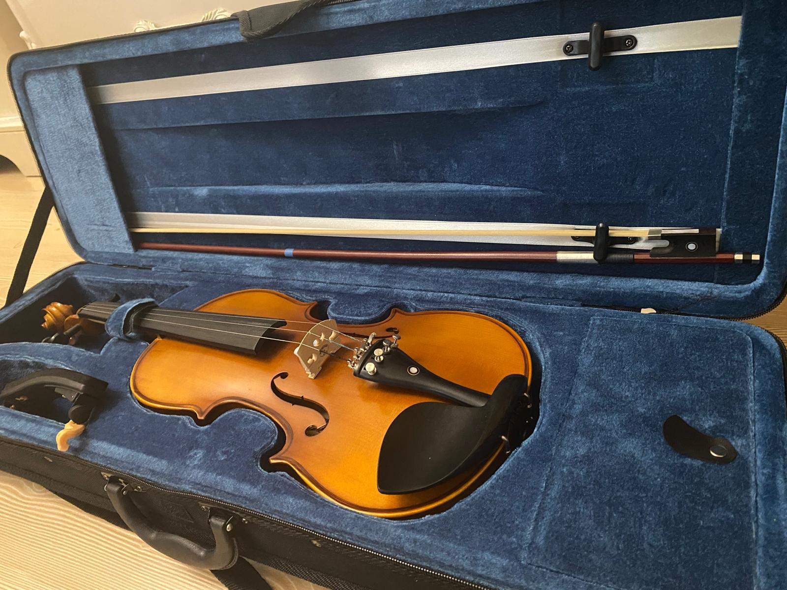

Merhaba, ben Zeynep Bayraktar. 13 Ekim 2005 İstanbul,Kadıköy doğumluyum. 2023 yılında başladığım
Sakarya Üniversitesi Bilgisayar ve Bilişim Bilimleri Fakültesinde Bilgisayar Mühendisliği
bölümünde eğitimime devam etmekteyim.Alanımda fazlasıyla yeni olsam da şu anlık yapay zeka ve veri tabanı
konularına ilgim olduğunu söyleyebilirim.
Yüzme ve tenis en çok zevk aldığım iki spor dalıdır.Ancak iki daldan da lisansım bulunmamakta. Resim çizmek,
keman çalmak ve oyun oynamak sevdiğim aktiviteler arasında fakat açık ara en sevdiğim hobim kitap okumaktır.
En sevdiğim kitabın ise ,manevi sebepleri dolayısıyla, J.R.R Tolkien'den "Yüzüklerin Efendisi: Yüzük kardeşliği"
olduğunu rahatlıkla söyleyebilirim.
Dizi izlemekten pek haz etmesem de film izlemeye bayılırım.En sevdiğim 3 film serisi sırasıyla Yüzüklerin
Efendisi, hobbit ve frozen dır.
Küçüklüğümden beri koleksiyon yapmaya bayılırım. Aktif olarak oyuncak, kitap ve figür koleksiyonu yapmaktayım.
En çok biriktirmekten zevk aldığım şey ise anılardır. En küçük ve belki de önemsiz şeyi bile gelecekte bana belirli
bir anı, dönemi, yeri anımsatacağını bildiğimden saklarım, bunlar benim için fazlasıyla kıymetlidir.
Yazı yazmayı çok severim ve genellikle yazdığım şeyler ya daha rahat düşünüp zihnimi kavrayabilmek için ya da ileride,
bulunduğum o yeri; anı, bende bıraktığı kalıntıları ve o zamanki beni hatırlamak için tasvirler yazarım.
